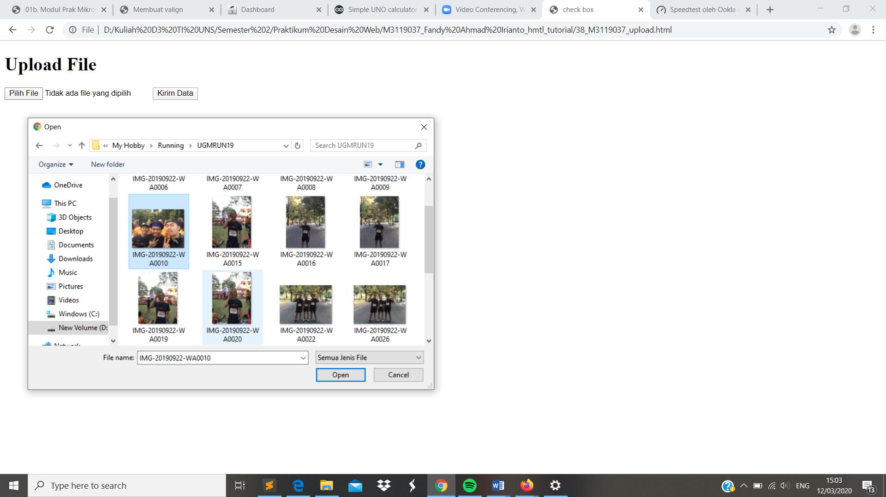

Upload / File Field
//Komponen lain dari form yakni File Field / Upload. Uplaod digunakan untuk keperluar mengrim file ke server. Tampilan dari komponen upload ini merip seperti text box terdapat tombol untuk melakukan browse file yang akan dipilih. Perintah yang digunakan untuk upload yakni tag < input type=”file” name=”namakomponen” / >. Selain itu ditambahkan atribut enctype=”multipart/form-data” pada tag < form method=”post” action=”action.script” >
Codingan
<!DOCTYPE html>
<html>
<head>
<meta charset="UTF-8">
<title> check box</title>
</head>
<body>
<h1>Upload File</h1>
<form action="" method="post" enctype="multipart/form-data">
<input type="file" name="fileku" />
<input type="submit" name="submit" value="Kirim Data" />
</form>
</body>
</html>
Tampilan Hasil Percobaan

Kesimpulan
Pada percobaan membuat File Field / Upload ini dapat disimpulkan bahwasalnya kita dapat mengirimkan browse file dengan memilih file yang akan kita kirim kedalam folder.Dalam web browser akan tampil sebuah tombol dengan text keterangan disampingnya. Nama tombol dan text keterangan tersebut akan berbeda-beda tergantung web browser. Ketika anda men-klik tombol upload (“Browse” pada firefox, dan “Choose File / pilih file” pada chrome) maka akan keluar jendela untuk memilih file yang akan diupload. Setelah memilih salah satu file yang akan diupload, text keterangan akan berubah menjadi nama file tersebut..